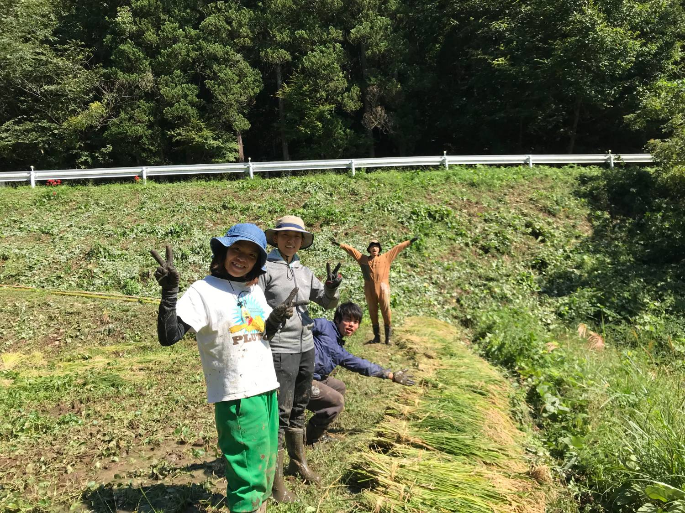

8年前、コロナの真っ只中。布団の中で、未来は発酵していました。
株式会社アグクルから、オリゼへ。── これは、私たちが歩んできた8年の物語です。

栃木・茂木町、放棄された棚田。雑草を刈り、土を起こし、苗を植え、自分たちで炊いて食べる。── 学生時代の「棚田復活プロジェクト」が、すべての源流です。
1200年続いてきた日本の米と発酵を、次の世代に手渡したい。その問いから、すべては始まりました。
学生ビジコン優勝の賞金100万円を握って、栃木・宇都宮で登記。社名は 「株式会社アグクル」── ラテン語 agricultura（農）から。
日本の伝統技術で食と農を盛り上げる、その想いを社名に込めました。
最初の商品は、米麹由来の甘味料。自宅のキッチン で仕込み、各地のマルシェにテントを担いで運び、一袋ずつ語って売る日々が続きました。
コロナ禍。マルシェという、唯一の販路が消えました。新しい商品を作らなければ── そう焦っていたある朝、ヒントは 家族のキッチン から届きました。
代表・小泉の妻が朝食に食べていた、市販のグラノーラ。何気なく裏面を見ると、原材料は、ほとんどが白砂糖。
家族の何気ない一言から生まれたアイデアは、社内で一年眠ります。布団の中で、未来が発酵していた。
翌年、開発が動き出します。妻と当時の数人のメンバーがレシピを書き起こし、何十回と試作を重ねました。焼いては湿気り、湿気っては甘さがブレ── そのたびに、家族とメンバーの台所が試作場になりました。
米麹は変わらず、栃木・日光の 神保栄三久商店 から。創業時から、今もずっと一緒に届けてくれているパートナーです。
銀行・投資家から約5,000万円を調達し、私たちは米麹グラノーラに賭けることを決めました。
米麹グラノーラ、発売。OEMに頼みたかったけれど、最小ロットすら届かない。だから、社長が焼きました。
社長と、現アメリカ事業部の社員、2人で家庭用オーブンの前に夜通し立つ。1回1キロ、10時間で50袋。 週に何回か焼いて在庫を貯め、貯まったら販売。12時間労働── それは今も変わりません。
発売直後から、お客様の声が違いました。「こういうの、欲しかった」「毎日食べたい」── 届いたメッセージは100通を超えました。
創業以来、私たちは何度も資金繰りに追われました。コロナで売り場が消え、海外事業で壁にぶつかり── 「もうダメかもしれない」と社内で何度も話し合った時期があります。
その、いちばん厳しかった時期。当時パートで働いていたスタッフから、こう言われました。
この言葉を、一生忘れてはいけないと思っています。私たちがここまで続いてきたのは、私たちの力だけではありません。
クレームから、多くを学びました。商品とは、食べられるかどうかだけではありません。
注文してから発送までの時間。届くまでの時間。箱がボコボコになっていないか。開けた瞬間、中身がどう入っているか。同梱するレシピ。味そのもの。そして、もう一度買いたいと思える後味。── この一連の流れの、全部が商品です。
まだまだできていないことが、山ほどあります。それを全部やり切るまでが、私たちの責任です。
宇都宮から東京へ── オリゼにとって大きな転機でした。
東京進出時、当時のマーケ担当の後輩が一緒に来てくれて。2Kのワンルームに2人で住みながら、東京事業部を始めました。あれは今でも、思い出深いエピソードです。
創業から4年。米麹由来の甘味料を作り、マルシェで対面販売を重ね、グラノーラへと事業を広げてきた日々。「農業全般」ではなく、本当に自分たちが向き合うべきものは何か── ようやく見えてきた答えが、発酵、そして米麹 でした。
2022年12月、私たちはブランド名・社名を 「オリゼ」 に統一しました。麹なら、アスペルギルス・オリゼ ── 日本麹カビ菌の学術名から。菌の名前を、社名に背負う覚悟と共に。
栃木・宇都宮に自社工場を構えました。OEMから自社製造に切り替わったことで、限定フレーバーや新商品の開発スピードが格段に上がります。
創業時 3人 だったオリゼは、いま 35人。それぞれが、自分の現場で「8年分の誇り」を積み上げています。
サステナビリティを「掲げるだけ」で終わらせない── オリゼは、社会への影響を200項目で第三者に審査される国際認証を、日本の食品メーカーとしては数少ない一社として取得しました。
環境、健康、働き方。幅広い項目を一つひとつクリアするために、会社の制度を変えていきました。今では、B Corpの基準をベースに会社の方針を決められる。本当の意味でのサステナビリティカンパニーの一歩だと感じています。
米麹グラノーラ、麹マヨネーズ、フルーツ甘酒、酵素洗顔。── どれもこれも、お客様の「こうだったらいい」から育ちました。
累計出荷 200万袋、リピート率 68%、累計レビュー 1,247件・★4.6。
数字は、応援してくれた人の数です。
アメリカ事業は、もう始まっています。来年から本格的に加速していきます。
日本のやり方を押し付けない── アメリカは、本当にサラダボウル。地域や人種ごとに違う食生活の一つひとつに、米麹の使い方を提案していく。それが私たちの戦略です。
1200年続いてきた米麹発酵の技を、オリゼは次の時代の世界標準へと押し上げていきます。
8年を通して、私たちはようやく、自分たちが何をすべきかを、はっきりと言葉にできるようになりました。
「地球を発酵させる」── それは、人間だけがいい世界ではなく、地球に関わるすべてのステークホルダーが、ゆっくり良くなっていくこと。
急に良くなるものは、急に廃れる。
発酵のように、じわじわと持続可能な地盤を作っていく会社でありたい。
冷凍食品やファストフードのような 文明食 も悪くありません。便利で、美味しくて、現代の暮らしを支えてくれます。
でも、体が重いなと感じた時、本来の自分の食生活に戻すのが 発酵食品 = 文化食 の役割です。
食の一番の良さは、誰かと楽しみながら共有できること。健康になるのは結果であって、その過程を大事にしたいんです。
ここまで来られたのは、私たちの力だけではありません。
最初に試作を食べてくれた 家族。
変わらず麹を届け続けてくれる、栃木・日光の 神保栄三久商店。
夜通し焼いた 仲間。
「私が潰さない」と言ってくれた スタッフ。
毎週レビューを書き、リピートしてくれる お客様。
全員の "ありがとう" が、200万袋に育ちました。